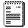

Documentation

| Programs, Routines, and Include Files | |||||||||||||||||||
| Name | Description | Download | Author | ||||||||||||||||
| Link86 | ACZ's own link routine. A hack of linkrout.h. |
| Assembly Coders Zenith | ||||||||||||||||
| MemSee | The ultimate hexadecimal memory viewer! MemSee let's you swap both ROM and RAM pages, a feature lacking in almost all hexviewers. Jump to addresses in memory using the Function keys or type in an address to go to. After exiting MemSee, it retains the address you left off at, the RAM page that was swapped in, and the ROM page that was swapped in. A must for all programmers! |
| James Malcolm | ||||||||||||||||
| Write Back | Routine to copy data like highscores back into the actual program's data. |
| Jonah Cohen | ||||||||||||||||
| CrtStrng | Fast generic String Variable Type creation program. |
| Andreas Finne | ||||||||||||||||
| Include | Set of incorporated include files |
| Clement Vasseur | ||||||||||||||||
| Includes | All basic include files. A must for every programmer. This contians the include files from Pat Milheron from TI. |
| Compilation | ||||||||||||||||
| TI86 Monitor | Command line driven system monitor. A must for anyone
working with the TI86's memory. Documentation |
| Steve Gordon | ||||||||||||||||
| Assembly Studio 86 version 3.1 | By far the best development environment for the TI86. It contians the setup program. A must for all programmers. |
| Jeremy Goetsch | ||||||||||||||||
| Hex Viewer | View hexadecimal and ASCII representations of programs on the TI86. |
| John Kempen | ||||||||||||||||
| destroy | Find out what registers are modified during calls. |
| James Malcolm | ||||||||||||||||
| flagtest | Find out what certain code does to every z80 flag. |
| James Malcolm | ||||||||||||||||
| AtoF | Converts a string of numeric charicters into a Floating Point Binary Coded Decimal number. |
| Joshua J Seagoe | ||||||||||||||||
| Demo 86 | Texas Instruments' own demo program to show off the functionality of the TI86. |
| Texas Instruments | ||||||||||||||||
| FindPixel | Find the address and bit offset in the Video Memory from a given pair of coordinates. |
| Clem Vasseur | ||||||||||||||||
| Find Pixel Routines | A collection of Find Pixel routines all zipped up. |
| Compilation | ||||||||||||||||
| Grayscale Routines | A collection of grayscale routines all zipped up. |
| Compilation | ||||||||||||||||
| Blitz Gray | A fast grayscale routine with almost no flicker. |
| Dux Gregis | ||||||||||||||||
| Key Test | Hit a key and it'll print the keycode in hexadecimal for you. |
| James Malcolm | ||||||||||||||||
| Link Routines | One of the oldest link transfer routines out there. |
| Pascal Bouron
| Rascall
| One of the most graphical Shells available.
|
Matthew
Shepcar
| Addiction
| Check out this game in the works. It's the newest Drug Wars
type game to hit the scene. Many names are those of classmates.
|
James Malcolm
| Telemark Assembler
| Commonly known as TASM this is one of the fundamental
tools for assembling z80 code. Included in all versions of
Assembly Studio.
|
Thomas
N. Anderson
| TI86 Assembler Include File
| The generic include file for TI86 programs.
|
Texas Instruments
| | ||||
| Documents | |||||
| Name | Description | Download | Author | ||
| Pointers | List of custom menu pointer values. |  | Benjamin Setton | ||
| 86 Custom Menu Pointers | Information on the making your own customized menu pointers for the Custom Menu and how the TI86 works with menus. | Andres Garcia | |||
| Templates | |||||
| Name | Description | Download | Author | ||
| Multi Key Test | An example of how to use Port 1 to check for multiple keys being held down at once. |
| James Malcolm | ||
| Temp Memory | Save temporary variables in the free memory directly following your program. |
| James Malcolm | ||
All file sizes are in bytes. Routine sizes are calculated by counting actual code used, where as program sizes are calculated by what is viewed on the Memory Delete Screen in TI-OS.